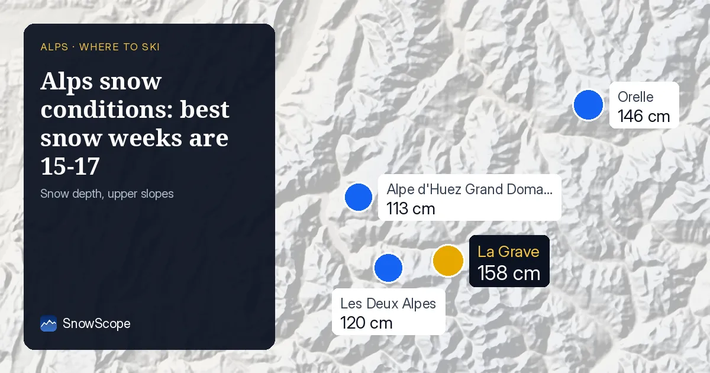

Alps snow conditions: best snow weeks are 15-17
Alps snow conditions – La Grave holds the most snow in the French Alps this weekend at 158 cm on the upper slopes, well ahead of Orelle (146 cm) and Alpe d'Huez (113 cm). The water stored in this snow is building early: historically, the richest snow weeks at La Grave fall in mid-April through late April, weeks 15 to 17.
See the live snow forecast for La Grave in the SnowScope appSnow depth, powder alerts and the 3D map, free.
Where the snow sits deepest now
La Grave's upper slopes hold 158 cm of snow as of Friday, 27 November. That depth reflects two weeks of accumulation: 38 cm fell on 25 November, then 6 cm on the 26th. The snowpack at mid-slope elevation (3,369 m) sits at 138 cm, while the base at 3,196 m has 130 cm. Orelle comes second with 146 cm at the top, fed by 24 cm of snow in the past three days. Alpe d'Huez and Les Deux Alpes lag at 113 cm and 120 cm respectively.
These early-season depths matter for water supply. At La Grave, the snow at mid-slope is already 2.8 times deeper than the typical depth for late November (usually 50 cm at that height). The water content is small yet, but November snow often sits on bare ground and builds into spring runoff. Orelle's mid-slope snow (67 cm) outpaces its November average (53 cm), suggesting the winter is priming storage in the central Alps faster than usual.
| Resort | Snow depth | New snow, 72 h | Coming, next days | Top |
|---|---|---|---|---|
| La Grave | 158 cm | 44 cm | 4 cm | 3,543 m |
| Orelle | 146 cm | 24 cm | 1 cm | 3,221 m |
| Alpe d'Huez Grand Domaine | 113 cm | 45 cm | 2 cm | 3,306 m |
| Les Deux Alpes | 120 cm | 36 cm | 2 cm | 3,511 m |

When La Grave's snow peak arrives
La Grave's richest snow weeks historically fall in weeks 15, 16 and 17—that is mid-April through late April. Right now, in week 48, the resort has only 54 percent of its typical late-November depth. This is not unusual for early season. The 158 cm you see today will deepen as winter progresses, but the question for the water system is whether April's melts will be rapid or gradual.
By contrast, Alpe d'Huez sits 8 cm deeper than average for this date at mid-slope (41 cm measured, 33 cm normal), and Orelle is 15 cm ahead of its usual 53 cm. These resorts are building water surplus early. If the freeze-thaw cycle stays stable through winter—staying cold enough to preserve the base layer—that early advantage could mean higher spring runoff and fuller reservoirs downstream in the Rhône catchment.

What to expect this weekend
Saturday and Sunday bring minimal new snow to these resorts. La Grave may see 1 cm by Sunday; Orelle and Alpe d'Huez will see less. The freezing level rises both days, reaching 3,210 m at La Grave on Saturday and 3,280 m on Sunday. That means wet snow at high elevations mid-day, but the base layer should stay locked in by night. The avalanche danger is rated 3 (considerable) across all four resorts—check the Météo-France BERA bulletin before skiing off-piste.
On upper slopes and north-facing terrain, snow will keep longest. At La Grave's base (3,196 m), which stays in shadow much of the day in late November, the 130 cm pack should hold firm. Lower down—at mid-slope elevations around 2,000-2,400 m—snow will thin and become patchy. Early-season depth is thin by winter standards, so staying on groomed pistes and official terrain is safer than seeking untracked snow.
Water storage and the season ahead
The past 72 hours added significant water to the high Alps. La Grave gained 44 cm, Alpe d'Huez 45 cm, and Les Deux Alpes 36 cm. At those high elevations, almost all of that snow will survive to spring as glacier and permanent snowfield. Water locked in now contributes to summer runoff for hydro plants and river valleys downstream.
For skiers, this matters: deep high slopes mean long ski seasons. For hydrologists, it means early confidence in spring water supply. The question is whether this November surge repeats or plateaus through December and January. If it plateaus, reservoirs will be moderate. If accumulation continues, 2027 could see very full reservoirs by April.
Planning your weekend
La Grave is your best bet for protected snow at high elevation this weekend, with 158 cm on upper slopes and calm weather. The base elevation sits at 3,196 m—well above the freeze level—so snow should stay dry through the day. Orelle offers similar protection and slightly better mid-slope depth (67 cm at 2,779 m), but check lift schedules before heading out.
Lower resorts like Alpe d'Huez and Les Deux Alpes will have thinner snow at their mid-elevations and mushy conditions on Saturday. If you ski there, start early on north-facing runs and descend quickly when the sun warms the freeze level around midday. All four resorts advise checking their websites for lift operations; early season means reduced lift schedules.
Tips for skiers
- Ski La Grave's upper slopes and north-facing terrain this weekend for the most stable and longest-lasting snow pack.
- Start early on Saturday; the freeze level rises to 3,210 m, so snow will soften by mid-morning below that height.
- At Alpe d'Huez and Les Deux Alpes, avoid lower elevations and south-facing runs where snow is thinner than 10 cm and may expose rocks.
- Read the Météo-France BERA avalanche bulletin before leaving the piste; danger is rated 3 (considerable) across all resorts.
- Check resort websites for lift opening and terrain availability; early-season lift schedules vary widely.
About these numbers
Resort snow depths are the deepest snow on the resort's upper slopes on the date shown; they are estimates for an area, not a measurement at one point. Forecasts can change. Always read the official avalanche bulletin before going off-piste.
Official avalanche bulletins: Météo-France BERA
Cite this report
For research, teaching or the press: the numbers and charts are free to reuse under CC BY 4.0 with this citation.
SnowScope (2026), Alps snow conditions: best snow weeks are 15-17, https://snowscope.app/blog/en/2026/11/alps-where-to-ski-this-weekend-27-november-2026.html, accessed 2026-11-27
SnowScope (Atlas Labs). (2026, November 27). Alps snow conditions: best snow weeks are 15-17. SnowScope snow reports. https://snowscope.app/blog/en/2026/11/alps-where-to-ski-this-weekend-27-november-2026.html
BibTeX
@misc{snowscope2026alpswheretoskithisweeken,
author = {{SnowScope (Atlas Labs)}},
title = {Alps snow conditions: best snow weeks are 15-17},
year = {2026},
month = nov,
howpublished = {\url{https://snowscope.app/blog/en/2026/11/alps-where-to-ski-this-weekend-27-november-2026.html}},
note = {Published 2026-11-27 10:35 UTC; accessed 2026-11-27}
}· CC BY 4.0 · Methods, data and tools →
La Grave: snow and temperature by height, this winter vs last (tools) →
Follow La Grave
Free: a message when fresh snow is coming, and the forecast every morning.
More snow reports

46 winters of snow history at Alpe d'Huez show peak depths of 52 cm at base, 184 cm mid-mountain, 440 cm at top. Data from 1980–2026.

Les 2 Alpes forecast for 23–29 November: 47 cm at 3200 m, 41 cm at 2400 m, 14 cm at base. Wednesday 25 is the peak day.

La Grave's top slopes near 3400 m will collect 49 cm in the week of 23–29 November 2026, with Wednesday 25 as the peak day. Data from 16 November.